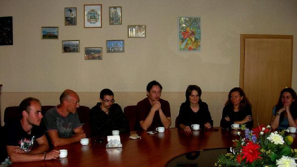
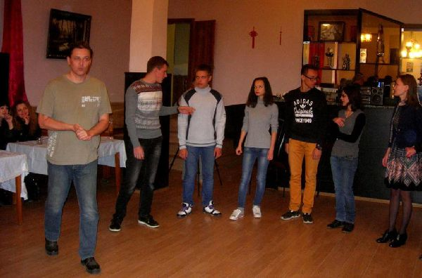
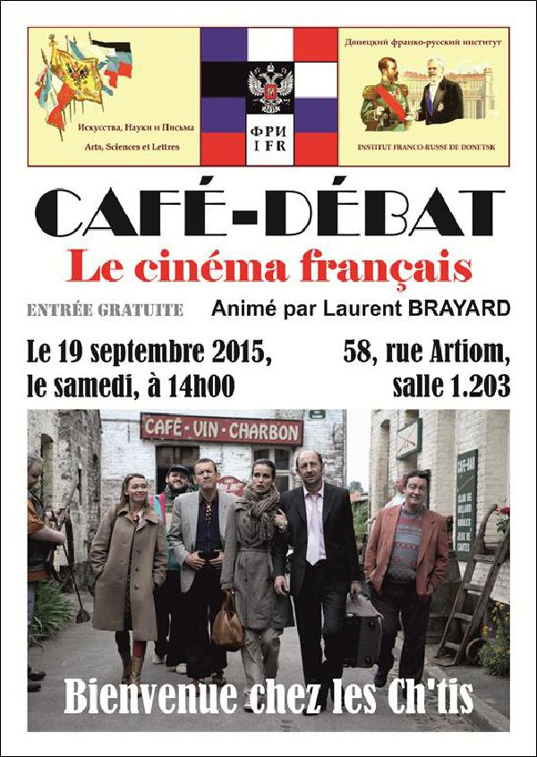
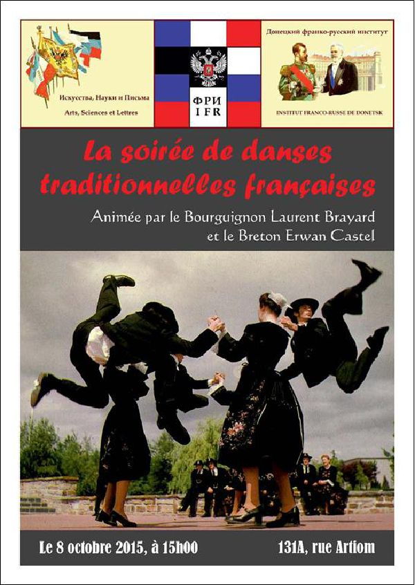
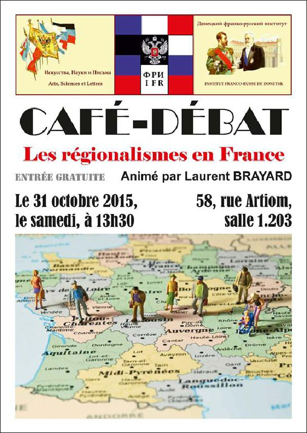
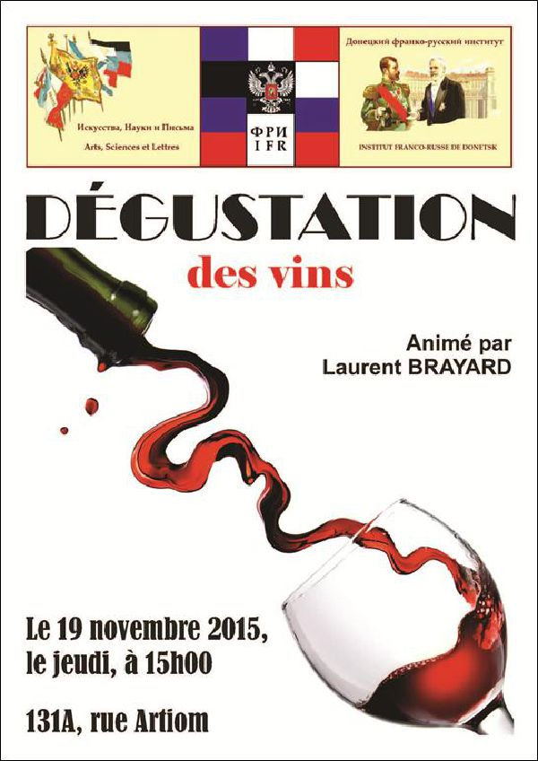
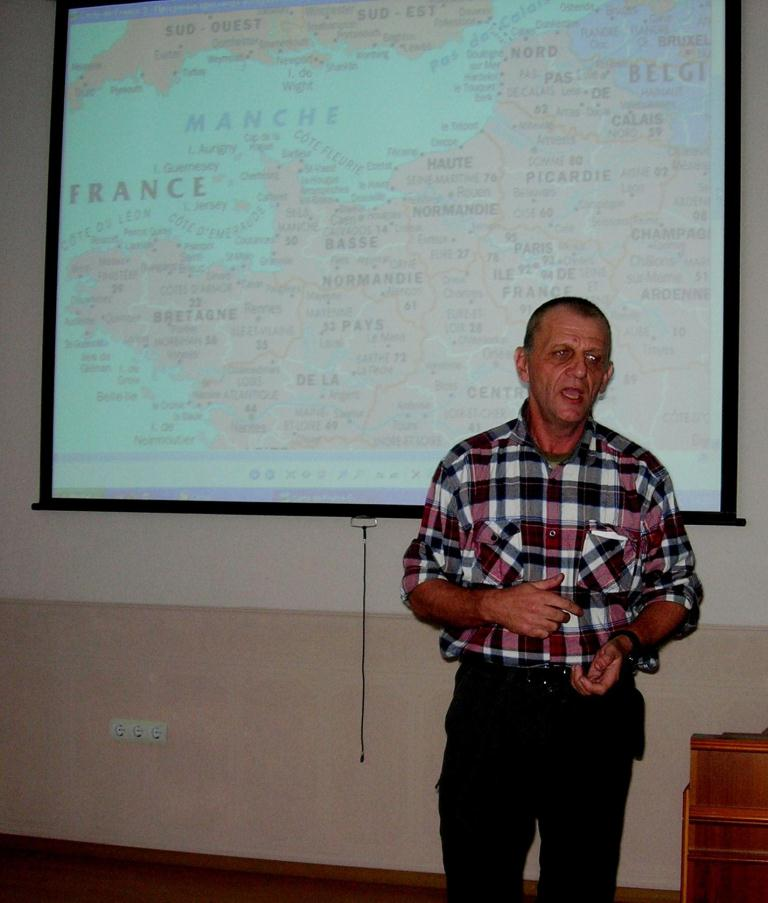
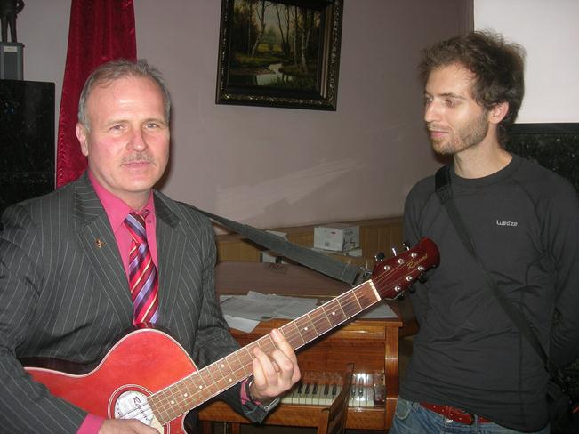

Les premières manifestations culturelles de l’IFRD
En ce milieu d’année, Guennady KLIAGUINE, Doyen, et Hélène SYDOROVA, Vice-Doyenne, du Département Français des Sciences et Techniques de l’Université Nationale Technique de Donetsk, assistés de François MAURICE, écrivain et historien français, ont proposé l’idée de la création de l’Institut Franco-Russe de Donetsk (IFRD), qui a pour but de contribuer au renforcement des relations entre les représentants de la culture française et russe. Dans le cadre de cet institut, il est prévu :
d’organiser et de réaliser des activités culturelles visant la popularisation des cultures française et russe,
de réaliser des conférences, séminaires et des tables rondes internationaux,
d’informer le public francophone sur les événements, les activités et les projets en République Populaire de Donetsk,
d’éditer le journal francophone « Sans Frontières »,
de piloter des échanges académiques, d’affaires et scientifiques,
de fournir des services d’information et de rechercher des partenaires dans le domaine de la coopération internationale,
d’accompagner l’élaboration, la traduction et la rédaction de documentations d’affaires, commerciales et professionnelles,
d’enseigner le français et le russe sur objectifs spécifiques,
d’offrir enfin l’accès à la médiathèque franco-russe.
Les premières quatre manifestations culturelles dans le cadre de l’IFRD se sont déroulées avec un grand succès grâce à la contribution du journaliste français Laurent BRAYARD qui animait toutes les rencontres.

Café-débat « Le cinéma français »

La soirée de danses traditionnelles françaises




La première rencontre réalisée sous forme d’un Café-débat, le 19 septembre 2015, a été consacrée au cinéma français. Arès avoir regardée une comédie française culte « Bienvenue chez les Ch’tis », qui mettait en exergue les différences et les particularités culturelles entre habitants du Nord et du Sud de la France. A la suite de la projection, une discussion sur le film s’est déroulée dans une ambiance chaude et conviviale avec une tasse de café. Les invités spéciaux étaient les représentants du Sud de la France, Philippe et son père Alain. Les portes étaient ouvertes à tout venant. Non seulement les étudiants et les enseignants du Département Français des Sciences et Techniques de l’Université Nationale Technique de Donetsk ont participé à ce débat mais aussi les élèves et les enseignants des écoles, des lycées et d’autres établissements d'enseignement de la République Populaire de Donetsk, y compris de l'Université nationale de Donetsk.
Puis, le 8 octobre 2015, il a été organisé une soirée de danses traditionnelles françaises où Laurent BRAYARD a donné un cours de danses de différentes régions de la France et une leçon de deux danses (une chapelloise et un cercle circassien) et a démontré une bourrée à deux temps, une bourrée droite et une bourrée tournée croisée. La danse a démontré qu’elle était aussi un bon moyen d’apprendre la culture.
 Intervention d’Erwan CASTEL au Café-débat « Régionalismes en France »Le deuxième Café-débat, le 31 octobre 2015, a été consacré aux régionalismes en France. Laurent BRAYARD a fait une brève excursion dans l'histoire de la France. Chacun de cinq Français invités a fait connaître l’histoire et la culture de ses régions : Bretagne, Bourgogne, Franche Compte, Auvergne et Provences-Alpes Côte d’Azur. Un belge nous a raconté les spécificités de la Wallonie, sa région francophone de la Belgique. Le Breton Erwan Castel a interprété les chansons en langue bretonne, gauloise et française. Tous les participants ont eu l'occasion sous une forme libre de communiquer avec des représentants de différentes cultures.
 Sergueï DJOURA et Julian chantent « Bella ciao » à la Dégustation des vinsLe 19 novembre 2015, l’IFRD a réalisé une soirée œnologique avec dégustation de vins. Le viticulteur Vladimir LIVTCHOUN a aimablement offert son vin à la dégustation aussi que des exemplaires de son ouvrage « Livre sur le vin ». Ayant une expérience de 10 ans en fabrication de vins, Laurent BRAYARD a expliqué les règles de la dégustation du vin, en évoquant l’histoire et la technologie de la production du vin. La deuxième partie de la soirée a été axée autour de la chanson française. La belle voix d’Erwan Castel, qui a chanté de nombreuses chansons traditionnelles bretonnes et françaises, a attiré beaucoup d’attention. D’autant plus au moment où il a invité tout le monde à chanter « Il y a dix marins sur mer » en dansant en même temps. Sergueï DJOURA a également magnifiquement interprété des chansons françaises et russes sur son piano et à la guitare. Néanmoins d’autres cultures ont également été mises à l’honneur. Tel Julian, l’Espagnol-Basque, qui a chanté avec Sergueï DJOURA « Besame Mucho », « Bella ciao » et d’autres chansons espagnoles et italiennes. Les étudiants, qui ont commencé à étudier la langue française, ont pour leur part entonné « La Marseillaise ».
Tous ces événements ont permis de faire des beaux échanges entre les représentants de la culture française et russe.
Partager cette page